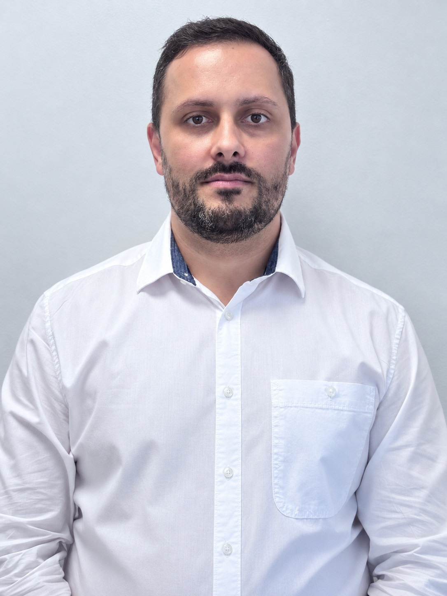

A
Manager departamente comerciale
Coordonarea echipelor, gestionarea proceselor comerciale și respectarea standardelor de calitate și siguranță în cadrul Auchan România.
Disponibil pentru următoarea provocare
Sunt Iulian — manager operațional cu experiență în coordonarea echipelor și pasionat de dezvoltare web. Transform problemele practice în soluții clare, utile și bine construite.

01 / Despre
Cariera mea a crescut în jurul oamenilor: de la ospitalitate și vânzări, la managementul unor departamente comerciale complexe.
Astăzi coordonez echipe și procese în retail, cu atenție la performanță, calitate și siguranță. Studiile de psihologie mă ajută să înțeleg dinamica echipelor, iar pasiunea pentru IT mă împinge să caut permanent moduri mai inteligente de a lucra.
Îmi plac fotografia, radioamatorismul, puzzle-urile și proiectele tehnice — locurile în care răbdarea și logica dau rezultate.
02 / Experiență
Coordonarea echipelor, gestionarea proceselor comerciale și respectarea standardelor de calitate și siguranță în cadrul Auchan România.
Proiecte practice în HTML, CSS și JavaScript, construite pentru a transforma ideile în experiențe digitale funcționale.
Studii în consiliere, cercetare și managementul conflictelor la Universitatea Andrei Șaguna.
03 / Proiecte
Experimente simple, dezvoltate pentru a exersa logica, interacțiunea și designul responsive.
JavaScript / UI
JavaScript / Joc
Idee în dezvoltare
04 / Contact
Sunt deschis la conversații despre roluri, colaborări și proiecte în care experiența practică întâlnește tehnologia.
Hai să discutăm